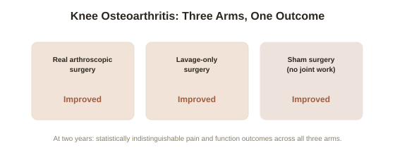

Chapter 4: Placebo Surgery — Sham Controls and the Knee That Wasn't Fixed
Chapter 3 closed on the idea that ritual and clinical attention can themselves shift patient outcomes. Surgery takes that idea to its most dramatic possible test: what happens when researchers perform a full operation — incisions, anesthesia, the entire experience of "having surgery" — but deliberately skip the specific step believed to be therapeutic? The results, across several major trials, are among the most unsettling findings in all of medicine.
What a sham surgery trial actually involves
A sham surgery or sham-controlled surgical trial randomly assigns patients to receive either the real surgical procedure under investigation, or an identical-appearing operation — same incisions, same anesthesia, same recovery experience, same surgical team and setting — with the specific therapeutic step (the actual repair, removal, or intervention) omitted or not performed. Patients are not told which group they're in until after outcomes are measured, and in well-designed trials even the clinicians assessing outcomes are kept blind to group assignment, precisely the same logic Chapter 1 and Chapter 3 described for drug trials, applied to a much more invasive intervention.
The knee arthroscopy result that shook orthopedic surgery
The most influential case involves arthroscopic surgery for knee osteoarthritis — a common, widely performed procedure to clean out damaged cartilage and debris from an arthritic knee joint. A landmark 2002 trial led by Bruce Moseley, published in the New England Journal of Medicine, randomly assigned patients to real arthroscopic surgery, a different real arthroscopic procedure (lavage only), or sham surgery involving incisions and simulated instrument sounds with no actual joint work performed. At two years' follow-up, the sham surgery group reported pain relief and functional improvement statistically indistinguishable from both real-surgery groups. Follow-up trials by other research teams replicated this basic finding closely enough that major orthopedic and rheumatology bodies substantially revised their guidelines, now recommending against arthroscopic knee surgery for osteoarthritis in most cases.

Vertebroplasty: a second, independently replicated case
Vertebroplasty — injecting bone cement into a fractured spinal vertebra to relieve pain from compression fractures, common in osteoporosis — underwent a similar reckoning. Two separate 2009 randomized trials, published simultaneously in the New England Journal of Medicine, compared real vertebroplasty against a sham procedure involving identical positioning, sedation, and even the smell of bone cement released into the room without actually injecting it into the vertebra. Both trials found sham surgery produced pain relief statistically equivalent to the real procedure. Unlike the knee arthroscopy case, this particular finding remains more actively contested within the field — some clinicians and later, differently designed trials have argued the sham procedure itself may have some genuine therapeutic effect on the fracture (making it not a "pure" placebo comparison), a good illustration of how even a rigorously designed sham trial doesn't always settle a clinical question permanently.
What these results do, and don't, establish
It's worth being precise about what sham surgery findings actually show, in the same spirit as Chapter 1's caution against overstating placebo's reach: these results don't mean surgery in general is fake or that surgeons are performing unnecessary operations across the board — for these two specific procedures on these specific conditions, the mechanism believed to provide relief (removing joint debris, stabilizing a fracture with cement) turned out not to be doing the work the outcomes suggested it was doing. The placebo component of the surgical experience itself — the elaborate ritual, the expectation, the recovery process Chapter 3 already identified as a driver — was substantial enough to account for the benefit on its own. This is precisely why sham-controlled surgical trials, though ethically and logistically demanding to run, are increasingly viewed as necessary before widely adopting a new procedure whose benefit rests mainly on subjective, pain-related outcomes rather than objectively measurable structural repair.
Try this
Ideas for noticing or testing this in your own life.
- If you or someone you know is considering a procedure for a primarily pain-related condition, it's worth researching directly whether a sham-controlled trial has ever been run for that specific procedure — for a surprising number of common interventions, one has.
- Notice how much of "having surgery" as an experience — the preparation, the ritual, the recovery, the sense of having done something decisive — might itself be part of what drives relief, independent of the specific technical intervention performed.
Worth pulling on?
A few loose threads from this chapter — if any of these genuinely grab you, that's a good sign of where to go next.
- Sham surgery raises the sharpest possible version of the informed consent question this library has touched on throughout — what patients are and aren't told before consenting to a trial. → The subject of the final chapter in this topic: the ethics of deception in medicine.
- The ritual and expectation components identified here overlap directly with a related medical intervention covered elsewhere in this library. → Already in the library: Hypnosis covers hypnoanesthesia, where expectation-driven relief is measured directly against chemical anesthesia.